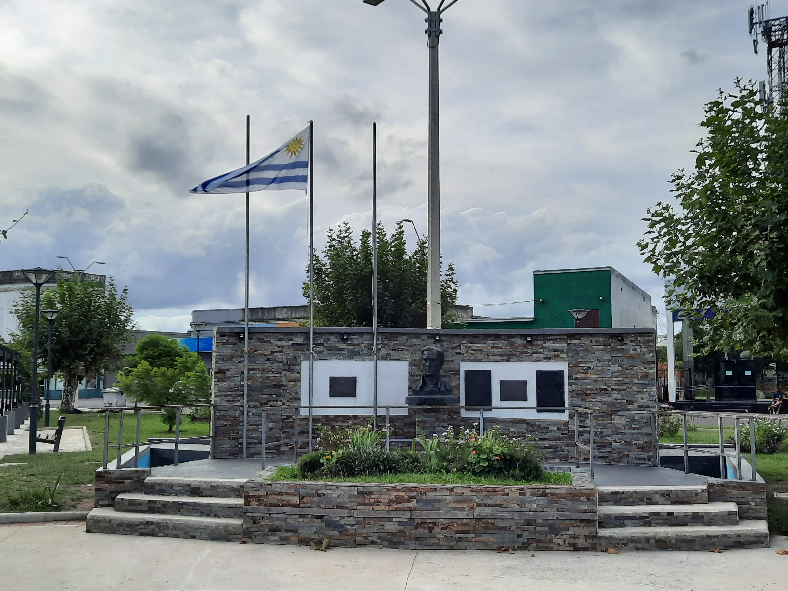

Go Back
Interior Uruguay

If you go to the interior part of the country you will experience a much different side to the country. Away from the beaches are green rolling hills abundant with cattle. You can see the traditional gauchos of Uruguay if you go further inland. They are like the cowboys and can often be seen riding horses wearing traditional clothing. It's a tranquil way of life and there are many cool experiences in the lesser travelled interior of the country. I've travelled through Maldonado into Lavalleja and Treinta y tres province through towns like Aiguá, Mariscala, Jose Pedro Varela, Treinta y tres and up to the nature preserve of Quebrada de los Cuervos. I've typically travelled through this region of the country to visit family who live in Jose Pedro Varela (a town in Lavalleja province). I'll share my experiences and advice for a day trip through this region.
Aiguá is a very well preserved colonial town at the edge of Maldonado province. Its name means running water in the Guaraní language. The buildings are very well maintained and the town has a very beautiful plaza. I've never really done any activities here or anything but it's a charming town to drive through. You can stop to take some pictures and maybe enjoy the plaza before moving on.
An almost obligatory stop that we always make is at a restaurant called "Lo de Homero" in a town called Mariscala. They offer great Uruguayan parrilla at a fraction of the cost you would see in Montevideo or Punta del Este. You should absolutely stop here for a great lunch if you are ever passing by Mariscala. Aside from a la carte items from the parrilla they also offer a salad bar, pastas, coffee and dessert. They really do have everything! Pictured below is a plate of asado, chorizo, pamplona and fries from Lo de Homero.
Jose Pedro Varela is a small town in Lavalleja province. It's a very peaceful place with a slow paced lifestyle. The center of the town has a recently renovated plaza surrounded by little businesses and shops. My great aunt actually lives right along this plaza and her property has been in my family for generations! Although there isn't much to do in the town it offers a glimpse of a different Uruguay than what most tourists see on the coast. The people of the town know each other very well and life moves at a much slower pace. On occasions the town gets together and they have performances and street food around the plaza.
Quebrada de los cuervos which means gorge of the crows is a nature reserve somewhat near to Jose Pedro Varela. It's up in Treinta y tres province. You can come here for a nice nature walk through the gorge and take in the endless palm trees and calming streams. It's a nice spot to visit if you are ever in this area.